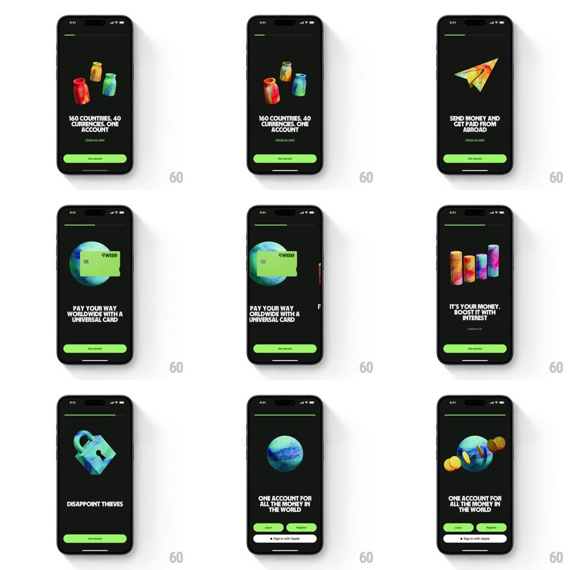

Media
Frame-by-frame

Rebuild this interaction 1:1: Wise's onboarding story - swipe up from the green splash and step through value-prop pages where chunky 3D clay illustrations tilt and settle above bold manifesto type, a progress bar tracking at the top.

Rebuild this interaction 1:1: Wise's onboarding story - swipe up from the green splash and step through value-prop pages where chunky 3D clay illustrations tilt and settle above bold manifesto type, a progress bar tracking at the top.
## Integration
Integration: stack-agnostic spec - springs given as stiffness/damping, timed motions as duration + curve; map every value to your framework and animation library of choice.
## Scene
A solid Wise-green splash with the black flag logo, then black story pages: a thin green progress bar at top, a centered 3D illustration (coin jars, paper plane, globe with card, interest bars, padlock, globe with orbiting coins), huge bold caps copy ("160 COUNTRIES. 40 CURRENCIES. ONE ACCOUNT", "DISAPPOINT THIEVES"), a small footnote, and a green "Get started" pill. The final page swaps to Log in / Register / Sign in with Apple.
## Motion spec
Pattern: vertical story pager with 3D illustration settles.
- Swipe up (or tap Get started): the current page exits upward (translateY -60% + fade, 300ms, ease-in) while the next rises from below (translateY 40% to 0, spring ~340/24) - a stacked-card handoff, not a slide of one canvas.
- The progress bar advances per page (segment fill, 250ms, ease-out), overshooting 2px and settling.
- Each illustration enters with a 3D flourish: rotateX 18deg + scale 0.9 to flat and full (spring ~300/18, 500ms), then idles with a slow float (translateY +-6px, 3.2s) and reacts to device tilt (gyro parallax, max +-8deg, heavily smoothed).
- The headline sets in with a masked rise (translateY 100% inside its line mask, 350ms, ease-out) 100ms after the illustration starts; the footnote fades last.
- The green pill holds constant at bottom across pages - only its label changes (crossfade 200ms) on the final page.
## Calibration
- Pages are pure black with one green accent (bar + pill); illustrations carry every other color.
- Type is heavy grotesque caps, left the width of the screen - no centering.
## Reduced motion
Pages crossfade; illustrations static.
## Don't miss
- The gesture is UPWARD - pages stack vertically like a deck, never a horizontal swipe.
- The illustration's entrance tilt makes it read as a physical object dropped onto the page; keep the spring overshoot.